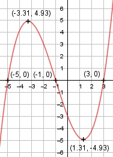

Aufgabe 28 f(x) = 0,2x3 + 0,6x2 -2,6x - 3 f'(x) = 0,6x2 + 1,2x - 2,6, f''(x) = 1,2x + 1,2, f'''(x) = 1,2 Definitionsbereich: -∞ < x < ∞ Wertebereich: -∞ < f(x) < ∞ Asymptoten: - Symmetrie: - Nullstellen: 0,2x3 + 0,6x2 - 2,6x - 3 = 0 |:0,2 x3 + 3x2 - 13x - 15 = 0 Durch Probieren gefunden x = -1. Hornerschema: 1 3 -13 -15 x1 = -1 -1 -2 15 ------------------------- 1 2 -15 0 Polynomdivision: 0,2x3 + 0,6x2 - 2,6x - 3 : (x+1) = 0,2x2+0,4x-3 -(0,2x3 + 0,2x2) ---------------- 0,4x2 - 2,6x - 3 -(0,4x2 + 0,4x) --------------- -3x - 3 -(-3x - 3) ----------- 0 x2 + 2x - 15 = 0 (-3) p, q - Formel: p = 2, q = -15 x2,3 = x2,3 = -1 ± x2,3 = -1 ± x2,3 = -1 ± 4 x2 = 3 x3 = -5 N1(-1|0), N2(3|0), N3(-5|0) Schnittpunkt mit der y-Achse: f(0) = 0,2 * 03 + 0,6 * 02 - 2,6 * 0 - 3 = -3 Sy(0|-3) Extrempunkte: 0,6x2 + 1,2x - 2,6 = 0 |*(-3) A, B, C - Formel: A = 0,6, B = 1,2, C = -2,6 x1,2 = x1,2 = x1,2 = -1,2 ± 2,77 x1,2 = -------------- 1,2 x1 = 1,31, f(1,31) = 0,2 * 1,313 + 0,6 * 1,312 - -2,6 * 1,31 - 3 = -4,93 x2 = - 3,31 f(-3,31) = 0,2 * (-3,31)3 + 0,6 * (-3,31)2 - -2,6 * (-3,31) - 3 = 4,93 f''(1,31) = 1,2 * 1,31 + 1,2 > 0 --> Tiefpunkt (1,31|-4,93) f''(- 3,31) = 1,2 * (-3,31) + 1,2 < 0 --> Hochpunkt (-3,31|4,93) Wendepunkte: 1,2x + 1,2 = 0 |-1,2 1,2x = - 1,2 | :1,2 x = - 1, f(-1) = 0, f'''(-1) ≠ 0 --> Wendepunkt (-1|0) Graph:
